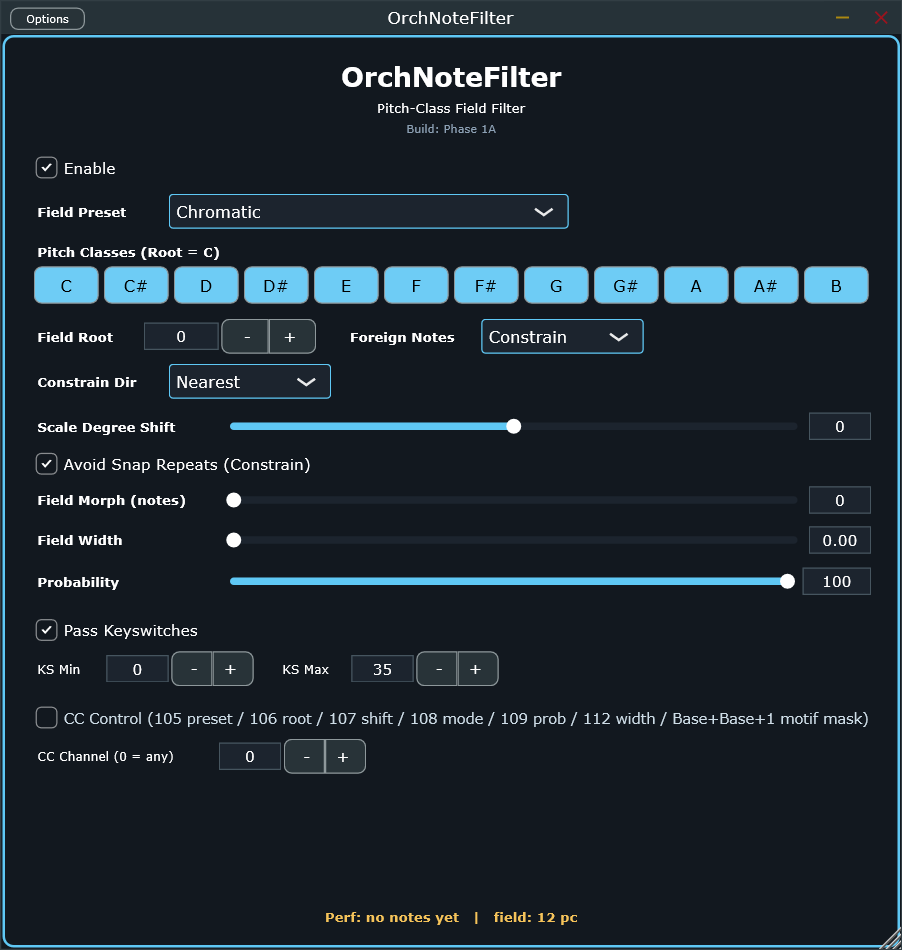

Per-instrument pitch-class field — the harmonic-identity gate, before range or gate even see the note.
note path · step 3liveOnft
Every note is checked against a named or custom 12-pitch-class field. What happens to a note outside it is a
real choice — filter it out (free rhythmic thinning), snap it to the field, pass it raw, or invert the whole
thing and solo the foreign notes. Control layout is deliberately character-first: Bitwig's
remote-control pages take 8 params per page in declaration order, so the knobs worth reaching for by hand come
before the 12 pitch-class toggles and CC configuration.
14 controls, single column. Keyswitches always pass through untouched regardless of everything above them —
ONF checks for a keyswitch before probability, field-morph, the CC mask, or any of the 4 foreign-note modes.

1
2
3
4
5
6
7
8
9
10
11
12
13
14
1
Enableenable
Master bypass. Off = pure pass-through, nothing else on this panel matters.
default: On
2
Field PresetfieldPreset
Named field library — modes, octatonic, whole-tone, pentatonics, atonal cells — loads straight into the 12 toggles below. Default is Chromatic (everything passes, field has no effect).
default: Chromatic
3
Pitch Classespc0 … pc11
12 independent toggles, the field itself — hand-edit here to go Custom, or let a preset / the incoming CC mask drive them.
default: all On
4
Field RootfieldRoot
0–11 (C…B)
Transposes the field's own reference pitch class.
default: 0 (C)
5
Foreign Note ModeforeignMode
Filter · Keep · Constrain · Solo
What happens outside the field. Filter drops it (thinning). Keep passes it raw. Constrain snaps it to the nearest in-field pitch. Solo is the complement — only foreign notes pass.
default: Constrain
6
Constrain DirectionconstrainDirection
Nearest · Up · Down
Only matters in Constrain mode — which way to round when a foreign note is equidistant from two field members.
default: Nearest
7
Scale Degree ShiftscaleDegreeShift
-12 … 12
Diatonic transposition within the field — moves by scale steps, not semitones. Pairs with OrchNoteMapper's chromatic octave-fold downstream.
default: 0
8
Avoid Snap RepeatsavoidSnapRepeats
Constrain-only: a different input that would otherwise snap to the exact same output as the last emitted note steps one field degree further instead — keeps a busy Constrain line from clumping on one pitch.
default: On
9
Field Morph (notes)fieldMorphNotes
0–128
On any field change, the next N note-ons blend old→new field via ramping probability instead of cutting over instantly — a transport-free harmonic crossfade. 0 = instant.
default: 0
10
Field WidthfieldWidth
0.0–1.0
0 = use the field exactly as set. 1 = widen it to the nearest whole named scale. In between = that fraction of the scale's extra notes, added furthest-first by distance to the nearest field member.
default: 0.0
11
Probabilityprobability
0–100%
Per-note chance this device does anything at all — a miss passes the note completely untouched.
default: 100%
12
Pass KeyswitchespassKeyswitches
Keyswitches inside the window below skip every check above — probability, field-morph, mask, all 4 foreign-note modes.
default: On
13
KS Min / MaxkeyswitchMin · keyswitchMax
0–127
The passthrough window — the ecosystem's shared source zone, 12–23 by default.
default: 0 / 35
14
CC Control / CC ChannelccControlEnable · ccChannel
Turns on live CC listening for everything in §02 below, filtered to one channel (0 = any). Off by default — a standalone ONF with no upstream broadcaster is unaffected.
default: Off, channel 0 (any)
Real capture of the Standalone build, Phase 1A. Status line at the bottom reads live performance + resolved field size.
02
CC Assignments
7 more real parameters, visible only as the summary text next to CC Control (§01.14) — no individual sliders.
Each is independently relocatable via host automation; these are just the shipped defaults.
Parameter
CC
Drives
ccFieldPresetNumber
105
Field Preset select
ccRootNumber
106
Field Root
ccShiftNumber
107
Scale Degree Shift
ccModeNumber
108
Foreign Note Mode
ccProbabilityNumber
109
Probability
ccFieldWidthNumber
112
Field Width
ccMaskBaseNumber
110 (0 = off)
12-pitch-class mask, packed across this CC and the next — the motif broadcast Composer Mastermind sends
Perf: … / field: N pc at the very bottom of the editor is the live readout — note
activity and the currently-resolved field size (after Field Width has widened it, if it has). The fastest way
to confirm what's actually sounding without opening a DAW meter.